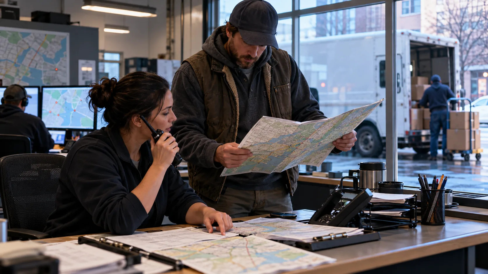

CINEMATIC SYSTEM EXPLAINERS
What happens when a system stops?
One system disappears. Everything changes.
We follow the real dependencies, backups, bottlenecks, and surprising things that keep working after a modern system goes offline.
SYSTEMONLINEremove one layer → trace the effects
GPSposition + timing
PAYMENTSauthorization
TRAFFIClocal control
COLD CHAINtemperature
SYSTEM / DEPENDENCY / CONSEQUENCE
Trace the chain, not the panic.
Each episode removes one system, states the assumptions, and follows what changes next. The point is to understand causality, not manufacture a disaster.
SCENARIO LIBRARY
One missing system. Four very different chains.
Each subject gets its own mechanism, evidence, and visual language. No recycled catastrophe template.
01 / POSITIONINGGPS
Navigation is only the visible layer.
Timing, dispatch, surveying, logistics, and synchronization all depend on positioning in different ways.
02 / TRANSACTIONSCARD PAYMENTS
A payment failure becomes an operations problem.
Queues, cash availability, connectivity, authorization, and merchant fallbacks determine what happens next.

03 / TRAFFIC CONTROLROADS
The system does not simply stop moving.
Intersections, responders, drivers, and local control procedures adapt before congestion becomes the real constraint.
04 / COLD CHAINLOGISTICS
Failure is a race against heat and time.
Thermal mass, door openings, backup power, fuel, and prioritization decide what is lost first.
FEATURED EPISODE
24 Hours Without GPS.
The first full system experiment follows more than navigation: dispatch, timing, finance, telecom, logistics, aviation, agriculture, and the backups that keep parts of the system working.
Watch IF IT STOPPED on YouTubeTHE METHOD
Cause before spectacle.
The story only works if the chain makes sense. That means separating what we know from what we assume, showing fallback behavior, and identifying the constraint that actually matters.
State assumptions
Define exactly what failed, where, and for how long.
Separate time scales
Immediate effects and second-order effects are not treated as the same event.
Test backup behavior
Workarounds, redundancy, stored capacity, and manual processes matter.
Find the bottleneck
The real payoff is the limiting factor, not the loudest image.
THE QUESTION MOST DISASTER STORIES SKIP
What still works?
Resilience is part of the story. A system can fail without everything around it failing at the same time. IF IT STOPPED follows the surviving layers too.
operating degraded unavailable
NEW EXPERIMENTS ON YOUTUBE
What system should we switch off next?
Every new scenario starts with a precise question and ends with the real constraint.